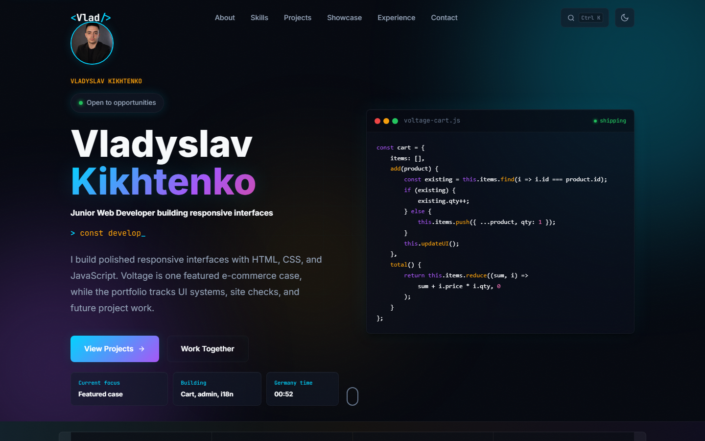
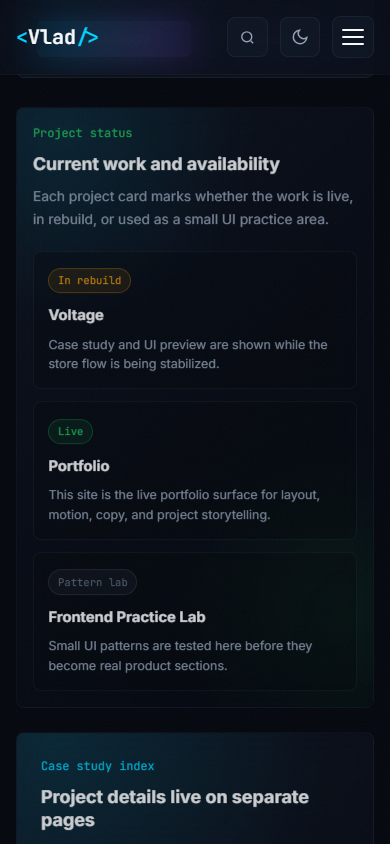

Portfolio website with readable project paths
This site is treated as a product, not a poster page. It includes project cards, case pages, quick links, theme states, browser checks, contact flow, and source links.


Make the work easy to judge
The page gives visitors direct routes: recruiter, client, mentor, projects, source, checks, and contact.
Interactions support inspection
Quick links, filters, case routes, theme switching, and copy actions point visitors toward project details or contact.
More depth, less clutter
Long project details live in case pages, so the homepage can stay scan-friendly.